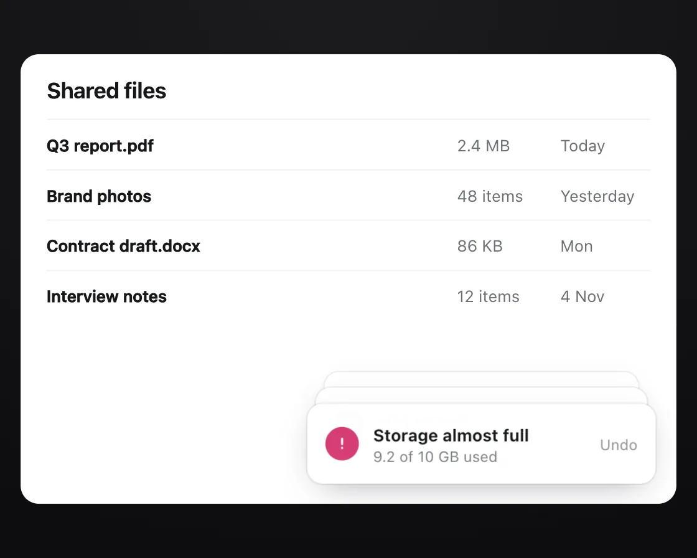

Toast stack
Toast stack is a DOM effect: new toasts in front, older ones step back. One plain JavaScript file with no dependencies; add it with npx motion-library add toast-stack.

Open it live, tune it and copy the code
What is Toast stack?
Toasts rise at the bottom right while older ones step back, smaller and higher, until the oldest fades.
How does Toast stack work?
Each toast’s transform comes from its stack index; dismissing the front one slides it off sideways and the rest step forward, all with transform and opacity transitions.
How do I add Toast stack to my website?
- In your project folder, run
npx motion-library add toast-stack. It writesanimations/toast-stack.js. Needs Node 18 or newer. - Import it and call it with a container element that has a size:
import fx from './animations/toast-stack.js'; const stop = fx(document.querySelector('#hero')); - Call
stop()to clean up, for example when a component unmounts.
Every setting below is also a flag, so you can install it already tuned: npx motion-library add toast-stack --gap 24.
What settings can I tweak?
| Setting | Flag | Default | Range | Step |
|---|---|---|---|---|
| Step (px) | --gap | 12 | 4 to 24 | 1 |
| Shrink per toast | --scaleStep | 0.05 | 0 to 0.12 | 0.01 |
| Move (ms) | --enterMs | 280 | 120 to 500 | 10 |
Specifications
- Renderer
- DOM (CSS and the Web Animations API)
- Category
- Micro & loading
- Dependencies
- None
- File size
- 5.3 KB, unminified
- Interactive
- No: it plays on its own
- Reduced motion
- Respects prefers-reduced-motion
- Licence
- MIT-0: use it anywhere, no credit needed
Source code
// Stacked toasts in a file-sharing app: each new toast rises in at the bottom right, and the older ones step back behind
// it, a little higher and a little smaller each, until the oldest fades away. Dismissing the front one slides it off to the
// side and the rest step forward. It feels right because the stack keeps the newest message in front without hiding the history.
const PARAMS = { gap: 12, scaleStep: 0.05, enterMs: 280 };
export default function (stage) {
const reduce = matchMedia('(prefers-reduced-motion: reduce)').matches;
const W = 540, H = 380;
const ico = (bg, d) => `<i style="background:${bg}"><svg viewBox="0 0 16 16" fill="none" stroke="#fff" stroke-width="1.8" stroke-linecap="round" stroke-linejoin="round">${d}</svg></i>`;
const msgs = [
[ico('#2f9e44', '<path d="M4 8.5l2.5 2.5L12 5.5"/>'), 'Upload complete', 'Q3 report.pdf · 2.4 MB'],
[ico('#1c7ed6', '<path d="M3 8h10M9 4l4 4-4 4"/>'), 'Invite sent', 'sam@example.com can edit'],
[ico('#15171a', '<rect x="5" y="5" width="7" height="7" rx="1.5"/><path d="M3.5 10V4.5a1 1 0 0 1 1-1H10"/>'), 'Link copied', 'Anyone with the link can view'],
[ico('#d63c74', '<path d="M8 3.5v5M8 11.5v.5"/>'), 'Storage almost full', '9.2 of 10 GB used'],
];
const files = [['Q3 report.pdf', '2.4 MB', 'Today'], ['Brand photos', '48 items', 'Yesterday'], ['Contract draft.docx', '86 KB', 'Mon'], ['Interview notes', '12 items', '4 Nov']];
const root = document.createElement('div');
root.className = 'ts-root';
root.innerHTML = `<style>
.ts-root { position: absolute; inset: 0; overflow: hidden; background: #f4f1f3; font-family: system-ui, -apple-system, "Segoe UI", sans-serif; color: #15171a; }
.ts-scene { position: absolute; left: 0; top: 0; width: ${W}px; height: ${H}px; transform-origin: 0 0; }
.ts-app { position: absolute; inset: 16px; border-radius: 14px; background: #fff; box-shadow: 0 0 0 1px rgba(20,24,30,.06); padding: 18px 20px; box-sizing: border-box; }
.ts-app h2 { margin: 0 0 12px; font-size: 17px; font-weight: 700; letter-spacing: -0.02em; }
.ts-file { display: grid; grid-template-columns: 1fr 80px 70px; align-items: center; height: 38px; border-top: 1px solid #f0f1f3; font-size: 12.5px; color: #6b7076; } .ts-file b { font-weight: 550; color: #15171a; }
.ts-stack { position: absolute; right: 32px; bottom: 32px; width: 270px; height: 62px; }
.ts-t { position: absolute; left: 0; right: 0; bottom: 0; height: 62px; box-sizing: border-box; border-radius: 12px; background: #fff; box-shadow: 0 0 0 1px rgba(20,24,30,.08), 0 10px 26px -10px rgba(30,20,40,.3); display: flex; align-items: center; gap: 11px; padding: 0 14px; transform-origin: 50% 0;
transition: ${reduce ? 'opacity' : 'transform'} ${PARAMS.enterMs}ms cubic-bezier(0.23, 1, 0.32, 1), opacity ${PARAMS.enterMs}ms cubic-bezier(0.23, 1, 0.32, 1); will-change: transform; }
.ts-t > i { width: 26px; height: 26px; flex: none; border-radius: 50%; display: grid; place-items: center; } .ts-t svg { width: 14px; height: 14px; }
.ts-t b { display: block; font-size: 13px; font-weight: 650; } .ts-t span { display: block; margin-top: 2px; font-size: 11.5px; color: #7a7f85; }
.ts-t em { margin-left: auto; font-style: normal; font-size: 11.5px; color: #8a8f94; }
</style><div class="ts-scene"><div class="ts-app"><h2>Shared files</h2>${files.map(([n, s, d]) => `<div class="ts-file"><b>${n}</b><span>${s}</span><span>${d}</span></div>`).join('')}</div><div class="ts-stack"></div></div>`;
stage.append(root);
const scene = root.querySelector('.ts-scene'), stack = root.querySelector('.ts-stack');
const fit = () => { const w = stage.clientWidth, h = stage.clientHeight, s = Math.min(w / W, h / H, 1.3); scene.style.transform = `translate(${(w - W * s) / 2}px, ${(h - H * s) / 2}px) scale(${s})`; };
const ro = new ResizeObserver(fit); ro.observe(stage); fit();
let live = []; // newest first
const layout = () => live.forEach((el, i) => {
// older toasts step up and shrink; anything past the third fades out behind the stack
el.style.transform = `translateY(${-PARAMS.gap * i}px) scale(${1 - PARAMS.scaleStep * i})`;
el.style.opacity = i > 2 ? 0 : 1; el.style.zIndex = 10 - i;
});
function add(m) {
const el = document.createElement('div'); el.className = 'ts-t';
el.innerHTML = `${m[0]}<div><b>${m[1]}</b><span>${m[2]}</span></div><em>Undo</em>`;
el.style.transition = 'none'; el.style.transform = reduce ? 'none' : 'translateY(100%) scale(0.95)'; el.style.opacity = 0; // reduced motion: toasts fade in place and the stack re-sorts without sliding
stack.append(el); el.offsetWidth; el.style.transition = '';
live.unshift(el); layout();
}
function dismiss() {
const el = live.shift(); if (!el) return;
if (!reduce) el.style.transform = 'translateX(110%)'; el.style.opacity = 0;
timers.push(setTimeout(() => el.remove(), PARAMS.enterMs + 40));
layout();
}
let timers = [];
function cycle() {
timers = []; live.forEach(el => el.remove()); live = [];
const t = (ms, fn) => timers.push(setTimeout(fn, ms));
msgs.forEach((m, i) => t(400 + i * 1100, () => add(m)));
t(5600, dismiss); t(6400, dismiss); t(7200, dismiss); t(8000, dismiss);
timers.push(setTimeout(cycle, 8800));
}
cycle();
return () => { timers.forEach(clearTimeout); ro.disconnect(); root.remove(); };
}